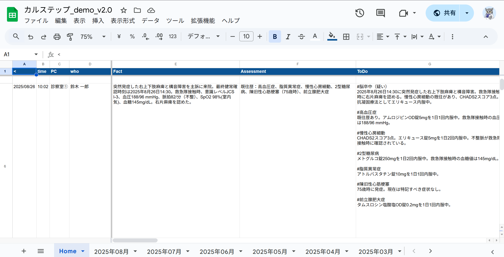

アプリ情報
アプリ名: サマレコ
対象OS: Windows
最新バージョン: v2.0
最終更新日: 2025年10月1日
今すぐ最新版をダウンロード
サマレコ v2.0 (Windows版) をダウンロードZIPファイル形式です。ダウンロード後、展開してご利用ください。
主な機能
- 長い文書を瞬時に要約、紹介状やサマリーの作成時間を短縮
- AIによる高精度なテキスト要約で、退院時サマリー作成を自動化
- コピペで完結する直感的な操作性。複雑な作業は一切不要
- 入力された電子カルテの文書をもとに、質の高い文章を出力
